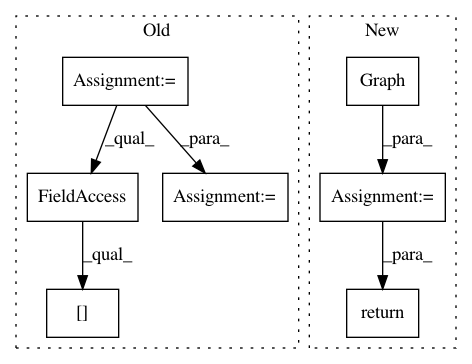

074d16ac217b9cddc04d093d019c61e393522eb5,autokeras/net_transformer.py,,to_wider_dense_model,#Any#Any#,73
Before Change
def to_wider_dense_model(model, level):
next_wider_layer, ind = get_next_dense_conv(level, model.layers)
n_add = randint(1, 4 * model.layers[level].units)
new_wider_layer, new_next_wider_layer = dense_to_wider_layer(model.layers[level], next_wider_layer, n_add)
return replace_layers(model, [level, ind], [new_wider_layer, new_next_wider_layer])
After Change
def to_wider_dense_model(model, target):
graph = Graph(model)
n_add = randint(1, 4 * target.units)
return graph.to_dense_wider_model(target, n_add)
def to_deeper_conv_model(model, target):
graph = Graph(model)
In pattern: SUPERPATTERN
Frequency: 3
Non-data size: 7
Instances
Project Name: jhfjhfj1/autokeras
Commit Name: 074d16ac217b9cddc04d093d019c61e393522eb5
Time: 2017-12-30
Author: jhfjhfj1@gmail.com
File Name: autokeras/net_transformer.py
Class Name:
Method Name: to_wider_dense_model
Project Name: jhfjhfj1/autokeras
Commit Name: 074d16ac217b9cddc04d093d019c61e393522eb5
Time: 2017-12-30
Author: jhfjhfj1@gmail.com
File Name: autokeras/net_transformer.py
Class Name:
Method Name: to_deeper_dense_model